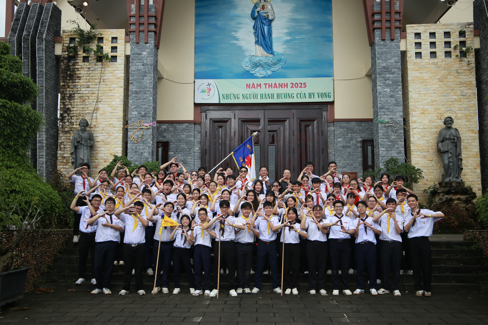

Tiếp bước hy vọng.
Bấm vào đây để xem video recap khoảnh khắc tuyệt vời này trên Facebook.
Cùng nhìn lại những kỷ niệm đáng nhớ qua lăng kính của team media.
Đừng bỏ lỡ những thước phim đầy cảm xúc này nhé!
Giáo xứ Vinh Sơn Nghĩa Hòa
Giáo xứ Suối Mơ